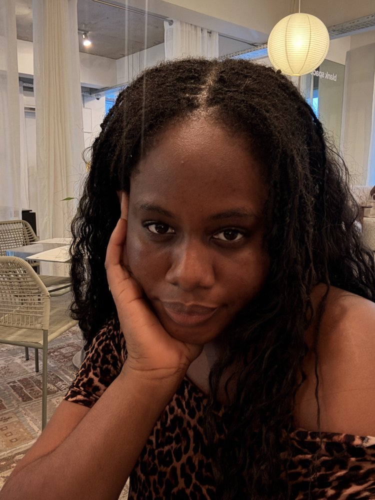

Hi! I'm Ibukun

Hi, I'm Ibukun — I turn still ideas into things that move, blink, and breathe.
I'm a motion designer with 5+ years across 2D and 3D, building brand films, event visuals, and social content for teams like Interswitch, Brass, Grip, and Kuda.
If it moves, I probably want to make it move better.
Download CV ↓Leading motion design for major brand events (VerveLife, Quickteller InsomniaQ, Interswitch Kickoff), plus TVC and OOH work across Quickteller and Verve.
Created motion graphics for marketing campaigns and product explainers, plus social creatives for Brassmoney.
Built Catlog's 3D illustration system and led motion for marketing content and the yearly Wrapped project.
Produced short-form social content and animated 10+ billboard campaigns reaching 100k+ users, including a World Cup campaign delivered in three months.
Led 3D animated promos and social graphics, building a reusable 3D design system that cut production time by 30%.
Created 2D animations for branding and social campaigns, contributing to measurable lifts in engagement and conversions.
technical
soft skills